<div data-category="Inventory Control" data-title="CM Return (CMRR)" data-updated="January 27, 2026" data-contributors="RoadmapIT" data-breadcrumb="Home,Inventory Control,CM Return (CMRR)">
  <div class="page-content">
    <p>A "Customer Material Return" refers to the process of a customer sending back goods they previously purchased to a company, which are then recorded in the system as a return</p>
    <p>This screen is used to define the CM Return</p>
    <h5>Navigation path:</h5>
    <p class="fs-6">Supply Chain Management \ Inventory \ Transaction \ CM-Return (CMRR)</p>
    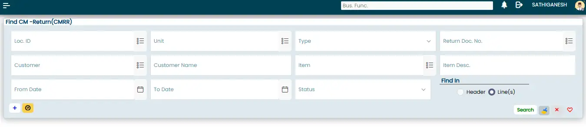
    <ul style="list-style-type: none; align-content: center">
      <li class="mouse-icon">Search screen displays the list of CM Returns with the relevant details and its status</li>
      <li class="mouse-icon">Click on Search to filter all the records.</li>
    </ul>
    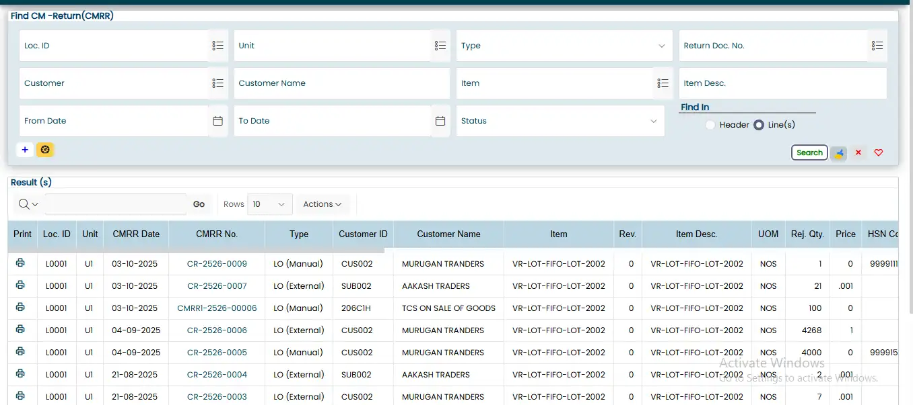
    <ul style="list-style-type: none; align-content: center">
      <li class="mouse-icon">User can filter the respective documents by entering the search parameters at the header.</li>
      <li class="mouse-icon">Using Search, system displays the results relevant to the search parameters entered.</li>
      <li class="mouse-icon">On -click; the corresponding transaction record will be displayed.</li>
      <li class="mouse-icon">
        Using
        
        icon, entered search parameters can be cleared.
      </li>
      <li class="mouse-icon">
        To close the screen, use
        <i class="bi bi-x fs-4 mx-2 text-danger"></i>
        icon.
      </li>
      <li class="mouse-icon">
        Click on
        <i class="bi bi-speedometer2 fs-4 mx-2 text-muted"></i>
        Create CM-Return(CMR) button to create CMR from Pending documents
      </li>
    </ul>
    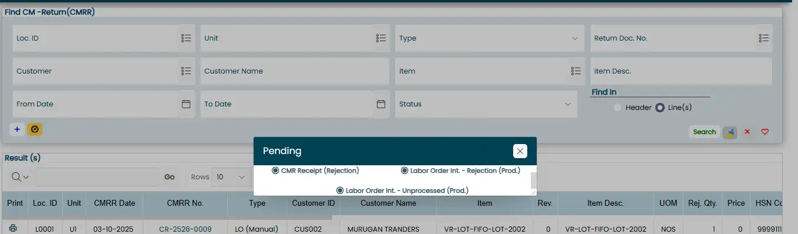
    <ul>
      <li>CMR Receipt (Rejection) – to create Rejection document from CMR receipt</li>
      <li>Labor Order. Int-Reject (Prod.) – to create rejection document from production</li>
      <li>Labor Order. Ont – Unprocessed (Prod.) – to create rejection document for unprocessed item in production.</li>
    </ul>
    <ul style="list-style-type: none; align-content: center">
      <li class="mouse-icon">Click on necessary option to create rejection document</li>
    </ul>
    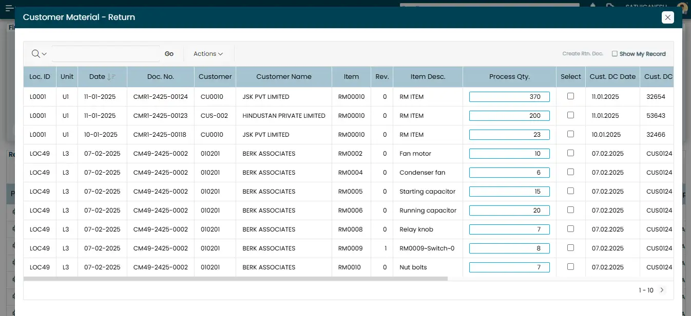
    <ul style="list-style-type: none; align-content: center">
      <li class="mouse-icon">Select the document and click on Create Rtn.Doc. button and the document will be created as shown below.</li>
    </ul>
    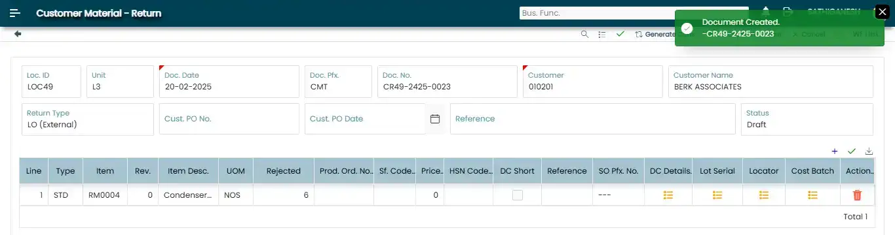
    <ul style="list-style-type: none; align-content: center">
      <li class="mouse-icon">Click on Generate Cons. button and the consumption will be generated</li>
    </ul>
    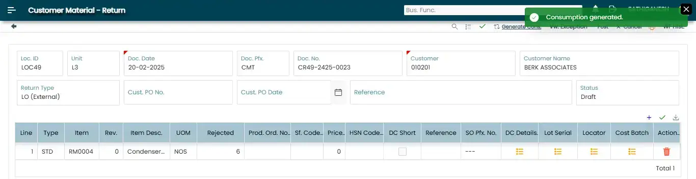
    <ul style="list-style-type: none; align-content: center">
      <li class="mouse-icon">Click on Post button and the document will be approved</li>
    </ul>
    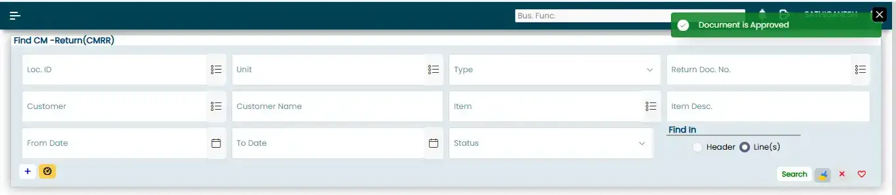
    <p>(or)</p>
    <ul style="list-style-type: none; align-content: center">
      <li class="mouse-icon">
        Click
        <i class="bi bi-plus fs-4 mx-2 text-primary"></i>
        button to create new CMRR by entering all the mandatory fields displayed in the Add dialog
      </li>
    </ul>
    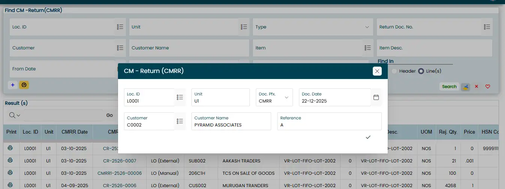
    <ul style="list-style-type: none; align-content: center">
      <li class="mouse-icon">Select Loc. ID</li>
      <li class="mouse-icon">Select the Doc. Pfx.</li>
      <li class="mouse-icon">Select/Enter the Customer</li>
      <li class="mouse-icon">Enter the reference</li>
      <li class="mouse-icon">
        Click
        <i class="bi bi-check-lg fs-4 mx-1 text-success"></i>
        and the screen will be navigated to create CMRR
      </li>
    </ul>
    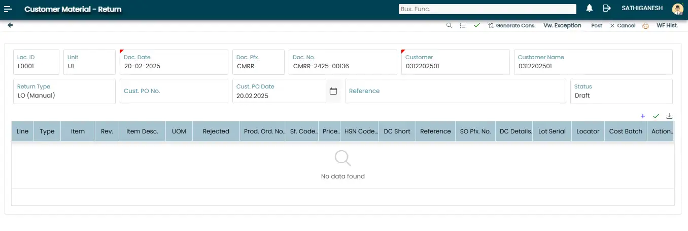
    <ul style="list-style-type: none; align-content: center">
      <li class="mouse-icon">
        Click
        <i class="bi bi-plus fs-4 mx-2 text-primary"></i>
        button to create new line items
      </li>
      <li class="mouse-icon">Select/Enter the Item</li>
      <li class="mouse-icon">Enter the Rejected qty</li>
      <li class="mouse-icon">Enter the other necessary details</li>
      <li class="mouse-icon">
        Click
        <i class="bi bi-check-lg fs-4 mx-1 text-success"></i>
        to Save
      </li>
    </ul>
    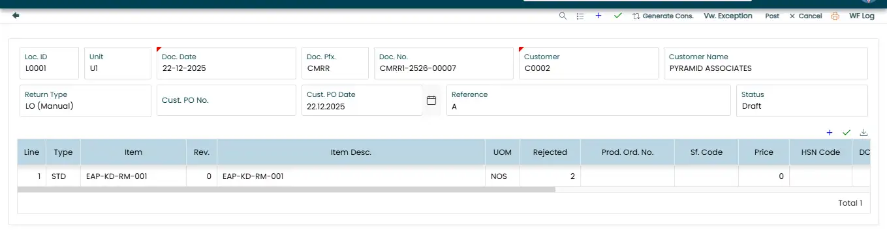
    <ul style="list-style-type: none; align-content: center">
      <li class="mouse-icon">Click Generate Cons. button to generate the consumption</li>
      <li class="mouse-icon">Click on View. Exception button to view the exception details</li>
    </ul>
    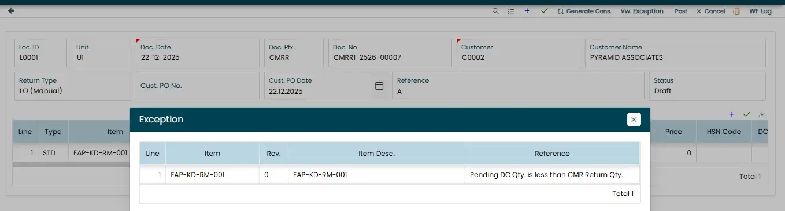
    <ul style="list-style-type: none; align-content: center">
      <li class="mouse-icon">Click on Post button and the document will be approved.</li>
    </ul>
  </div>
</div>